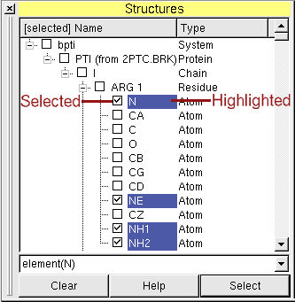
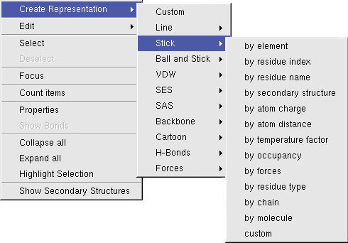
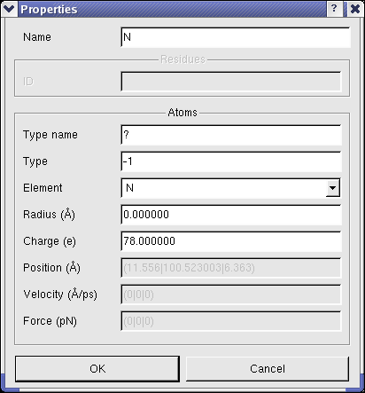
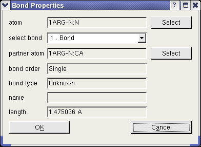

Structure Window
The structure window gives a hierarchical overview of the loaded molecules and provides means
to interact with the molecular entities.

Every molecule is part of a system, molecules from different systems do not interfere with each other, e.g. in
MD-Simulations. BALLView creates a new System for every molecular file, the user loads.
Highlighting
By clicking with the left mouse button on the names of molecular entities,
users can highlight these. To highlight more then one item, use
the Shift- or Control-modifier.
A click with the right mouse button will open a context menu, which will operate on the highlighted molecular items:

Selections (or how to find an atom)
Left of the names of the molecular entities are checkboxes, which show the user which molecular entities are
currently selected (picked). The selected objects become colored in the 3D view.
This can be used to find an atom in the three-dimensional structure of its molecule.
If a user starts a molecular dynamics simulation or an energy minimization while some molecular entities are selected,
BALLView only operates on these items (which is e.g. useful for optimizing the position of only the hydrogen atoms
of a protein from a PDB-file).
Cut, Copy, Paste
The user can cut or copy any molecular entities in the Molecular Control and also paste them into other objects
(see the Menu point "Edit"). This makes it possible e.g. to merge Systems:
- Load two molecular files (e.g. PDB files)
- Highlight the molecules of the first System (they should become blue like in the picture above)
- Click on the menu entry "Cut" in "Edit"
- Highlight the second System
- Click on the menu entry "Paste" in "Edit"
- The first System can now be deleted
Regular expressions
At the bottom of the Molecular Control resides a text field.
In this text field, the user can enter expressions to select molecular entities.
To apply the typed expression, either press the Return key or the "Select" button.
The "Clear" button clears the current selection.
Possible predicates are:
| true() | always true |
| false() | always false |
| SMARTS(string) | use a SMARTS expression |
| selected() | true for already selected atoms |
| name(string) | the name of an atom |
| type(string) | type name of an atom |
| element(char) | element (abbreviated by its symbol) |
| residue(string) | name of a residue |
| residueID(string) | PDB ID of the residue (usually a number) |
| protein(string) | name of protein, the atom is contained in |
| secondaryStruct(string) | name of the secondary structure, the atom is contained in |
| chain(string) | name of the chain, the atom is contained in |
| nucleotide(string) | name of the nucleotide the atom is contained in |
| solvent() | the atom is a solvent atom added by BALL |
| backbone() | backbone atoms |
| inRing() | part of a ring |
| doubleBonds() | atoms with double bonds |
| tripleBonds() | atoms with triple bonds |
| numberOfBonds(int) | atoms with a given number of bonds |
| aromaticBonds() | atoms with aromatic bonds |
| connectedTo(char) | atoms which are connected to an atom (see ConnectedTo Predicate in the BALL documentation) |
| charge([op][number]) | select by charge, Possible operators are '<' '<=' '=' '>=' '>' |
| spHybridized() | |
| sp2Hybridized() | |
| sp3Hybridized() | |
| charge(float) | atoms with given charge |
| isAxial() | |
| is4C1() | |
All predicates can be connected with AND and OR, grouped with brackets, and each predicate can be negated with '!'
Example: !residueID(12) AND (element(N) OR element(C))
Properties of Molecular Entities
To view and modify the properties of molecular entities, BALLView offers a special dialog, which can be opened
in the context menu of the structure window under the point "Properties".
In this dialog the user can e.g. set the name of a chain or change the charge of atoms.
(Another fast way to obtain the basic information for an atom, is to select (pick) exactly one atoms.
The information like charge and position are then shown in the logs window.)

Another dialog enables the user to obtain all information of any bond. To open this dialog, one atom has to be highlighted and
the context menu entry "Show Bonds" has to be clicked. In this dialog, the user can read the bonds order and type. The "Select" buttons in the dialog enable the user to
identify the partner atoms in the bond.

Distances and angles between atoms
When exactly two atoms are selected (picked) the distance between them is shown in the logs window
and the status bar.
For three selected atoms, the angle between them is shown, and for four atoms the torsion angle.
Count atoms and bonds
The context menu also has an entry to count the bonds and atoms of the currently selected molecular entity (e.g. a Residue).
Move molecular entities
To move parts of structures or individual atoms, the user can highlight them and switch to a special move mode with the context menu entry "Edit->Move". The mouse cursor changes to indicate the new mode. In this mode the mouse can be used to move and rotate all selected items. This works the same way as the normal rotation and translation of the viewpoint. To switch back to the rotation mode, the user can press either the Escape key or click on the menu entry "Display->Rotate Mode" .
Selection and Highlighting
The selection and the highlighting can be converted into each other through the context menu.
To select highlighted items use "Select", selected items can become highlighted by pressing
"Highlight Selection". This is e.g useful for creating a Representation for picked molecular items
or for finding a picked atom in the hierarchical overview in the structure window (the parent entries
of the selected objects will be opened).
|